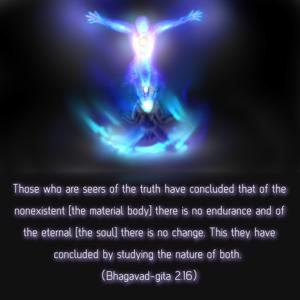
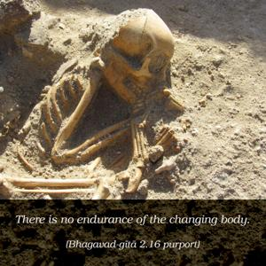
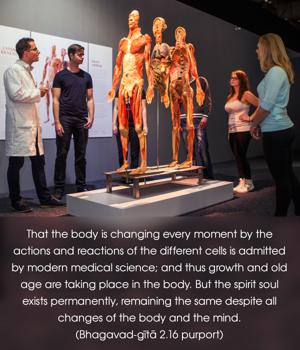
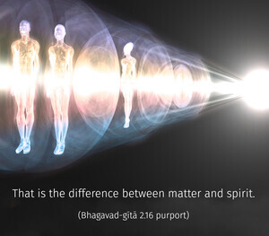
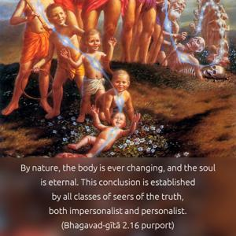
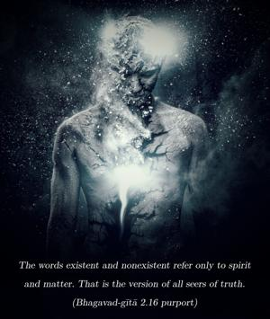

Those who are seers of the truth have concluded that of the nonexistent [the material body] there is no endurance and of the eternal [the soul] there is no change. This they have concluded by studying the nature of both.






There is no endurance of the changing body. That the body is changing every moment by the actions and reactions of the different cells is admitted by modern medical science; and thus growth and old age are taking place in the body. But the spirit soul exists permanently, remaining the same despite all changes of the body and the mind. That is the difference between matter and spirit. By nature, the body is ever changing, and the soul is eternal. This conclusion is established by all classes of seers of the truth, both impersonalist and personalist. In the Viṣṇu Purāṇa (2.12.38) it is stated that Viṣṇu and His abodes all have self-illuminated spiritual existence (jyotīṁṣi viṣṇur bhuvanāni viṣṇuḥ). The words existent and nonexistent refer only to spirit and matter. That is the version of all seers of truth.
This is the beginning of the instruction by the Lord to the living entities who are bewildered by the influence of ignorance. Removal of ignorance involves the reestablishment of the eternal relationship between the worshiper and the worshipable and the consequent understanding of the difference between the part-and-parcel living entities and the Supreme Personality of Godhead. One can understand the nature of the Supreme by thorough study of oneself, the difference between oneself and the Supreme being understood as the relationship between the part and the whole. In the Vedānta-sūtras, as well as in the Śrīmad-Bhāgavatam, the Supreme has been accepted as the origin of all emanations. Such emanations are experienced by superior and inferior natural sequences. The living entities belong to the superior nature, as it will be revealed in the Seventh Chapter. Although there is no difference between the energy and the energetic, the energetic is accepted as the Supreme, and the energy or nature is accepted as the subordinate. The living entities, therefore, are always subordinate to the Supreme Lord, as in the case of the master and the servant, or the teacher and the taught. Such clear knowledge is impossible to understand under the spell of ignorance, and to drive away such ignorance the Lord teaches the Bhagavad-gītā for the enlightenment of all living entities for all time.